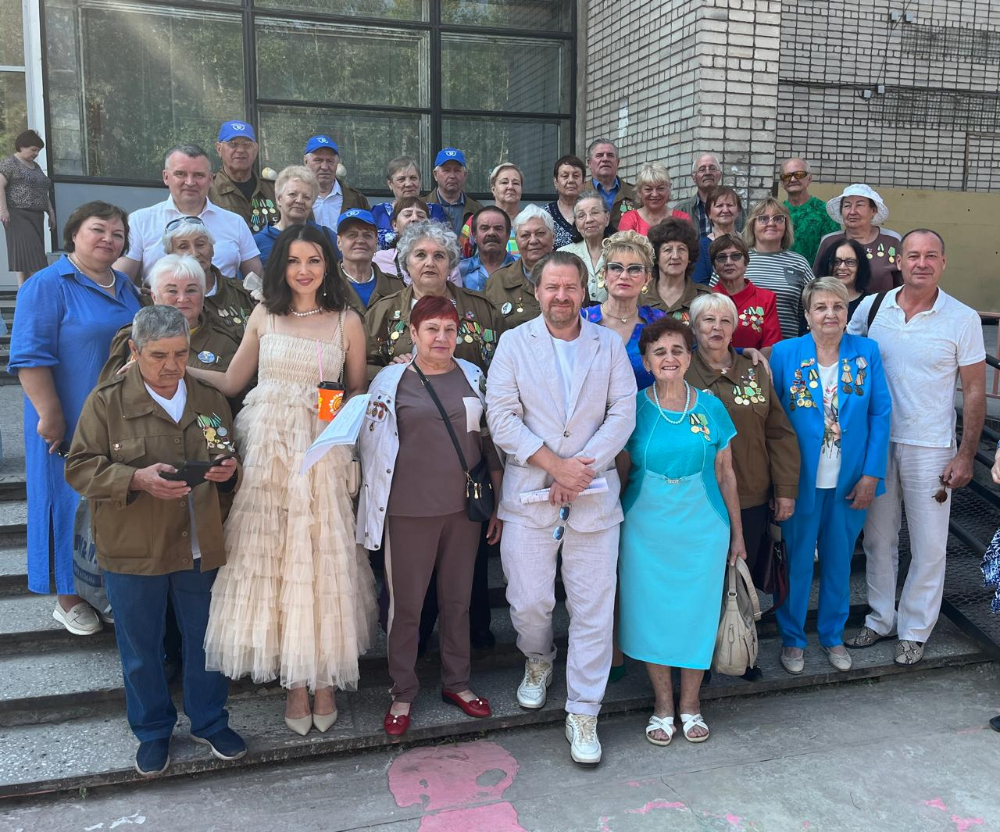

ПРЕСС-КОНФЕРЕНЦИЯ О ДЕСЯТОМ "СЕВЕРНОМ ДЕСАНТЕ" 29 мая 2024
Десятый юбилейный "Северный десант" стартует в Иркутской области 24 июня
В этом
году богата его повестка, аж пять равнозначно важных тем найдут отражение в работе:
50-летие БАМа, Год семьи, 70-летие городского статуса Усть-Кута, 95-летие Катангского
района и собственное достижение - 10 лет культурной деятельности по
городам и весям Восточной Сибири. Команда десанта подготовила для зрителей обширную
программу, в которой воплотятся самые смелые идеи и мечты организаторов и зрителей.
29 мая в г. Иркутске, в пресс- центре общественно-политической газеты" Областная" состоялась
презентационная пресс- конференция юбилейного "Северного десанта".
В ней приняли участие:
В ней приняли участие:
Татьяна ЖИНДАЕВА,
автор и руководитель культурного проекта "Северный десант" и фестиваля кино для детей "КиноХоровод";Татьяна АФАНАСЬЕВА,
Уполномоченный по правам ребенка в Иркутской области;Татьяна ПЛЕТАН,
заместитель министра социального развития, опеки и попечительства Иркутской области;Марина СЕДЫХ,
генеральный директор АО "ИНК-Капитал", председатель правления Благотворительного фонда Марины Седых, президент фестиваля кино для детей "КиноХоровод".ЧЕМ ПОРАДУЕМ В ЮБИЛЕЙНОМ ГОДУ?
Татьяна Жиндаева:
Юбилейная программа "Северного десанта" многогранная: в ней новшества, сюрпризы, открытия,
встречи, творчество и праздник одновременно.
- 14 точек десантирования на карте: Иркутск, Ербогачен, Даниловское и Ярактинское месторождения, Верхнемарково, Ния, Звездный, Иркутский завод полимеров, Казачинское, Железногорск-Илимский, Коршуновский, Усть-Кут, Качуг, Анга;
- 1 новый участник - Казачинско-Ленский район влился в дружные ряды муниципальных партнеров нынешнего десанта: Катангского, Усть-Кутского, Нижнеилимского, Качугского районов и г. Иркутска;
- 4 кинозвезды в актерском ансамбле: Ольга Хохлова, Алексей Барабаш, Александр Песков и Алеса Качер;
- 2 представления в программе: творческие встречи "Время снова гудит - БАМ" и спектакль "Раневская. Одинокая насмешница";
- 3 передвижные фотовыставки;
- 5 ретро-фильмов о БАМе от киностудий «Мосфильм» и «Ленфильм» с приветственным словом участников съёмочных групп, народных артистов России Георгия Штиля и Льва Прыгунова; - много мастер-классов для детей и взрослых - по актерскому искусству, режиссуре и семейной мемуаристике;
- 14 короткометражных фильмов по собственным сценариям для детской кинолетописи «Герои БАМа» снимут юные северяне из 10 муниципальных образований Прибайкалья на новом кинематографическом проекте «Северного десанта» - детском фестивале «КиноХоровод», который пройдет с 27 июня по 7 июля в г. Усть-Куте.
За 10 лет "Северный десант" выступил в 27 населенных пунктах; своим талантом поделились 30 известных актёров театра и кино; проведено 250 мероприятий; задействовано 75 тысяч зрителей, преодолено 26 900 километров сложных сибирских дорог.
Все годы проект активно поддерживают Правительство и Законодательное собрание Иркутской области, администрации Усть-Кутского, Нижнеилимского, Киренского, Катангского, Качугского районов Прибайкалья, Ленского и Мирнинского наслегов Республики Саха. Десант реализуется на столь обширных территориях Севера России благодаря помощи бизнес-сообщества: ООО «СИБНА», АО «Труд», АО «Международный аэропорт «Иркутск», ООО «Киренский речной порт», ООО «ТМИН» и других во главе с главным единомышленником и соорганизатором проекта - генеральным партнером АО "ИНК - Капитал" и Иркутской нефтяной компанией.
- 14 точек десантирования на карте: Иркутск, Ербогачен, Даниловское и Ярактинское месторождения, Верхнемарково, Ния, Звездный, Иркутский завод полимеров, Казачинское, Железногорск-Илимский, Коршуновский, Усть-Кут, Качуг, Анга;
- 1 новый участник - Казачинско-Ленский район влился в дружные ряды муниципальных партнеров нынешнего десанта: Катангского, Усть-Кутского, Нижнеилимского, Качугского районов и г. Иркутска;
- 4 кинозвезды в актерском ансамбле: Ольга Хохлова, Алексей Барабаш, Александр Песков и Алеса Качер;
- 2 представления в программе: творческие встречи "Время снова гудит - БАМ" и спектакль "Раневская. Одинокая насмешница";
- 3 передвижные фотовыставки;
- 5 ретро-фильмов о БАМе от киностудий «Мосфильм» и «Ленфильм» с приветственным словом участников съёмочных групп, народных артистов России Георгия Штиля и Льва Прыгунова; - много мастер-классов для детей и взрослых - по актерскому искусству, режиссуре и семейной мемуаристике;
- 14 короткометражных фильмов по собственным сценариям для детской кинолетописи «Герои БАМа» снимут юные северяне из 10 муниципальных образований Прибайкалья на новом кинематографическом проекте «Северного десанта» - детском фестивале «КиноХоровод», который пройдет с 27 июня по 7 июля в г. Усть-Куте.
За 10 лет "Северный десант" выступил в 27 населенных пунктах; своим талантом поделились 30 известных актёров театра и кино; проведено 250 мероприятий; задействовано 75 тысяч зрителей, преодолено 26 900 километров сложных сибирских дорог.
Все годы проект активно поддерживают Правительство и Законодательное собрание Иркутской области, администрации Усть-Кутского, Нижнеилимского, Киренского, Катангского, Качугского районов Прибайкалья, Ленского и Мирнинского наслегов Республики Саха. Десант реализуется на столь обширных территориях Севера России благодаря помощи бизнес-сообщества: ООО «СИБНА», АО «Труд», АО «Международный аэропорт «Иркутск», ООО «Киренский речной порт», ООО «ТМИН» и других во главе с главным единомышленником и соорганизатором проекта - генеральным партнером АО "ИНК - Капитал" и Иркутской нефтяной компанией.
СЛОВНО ИЗ АЛМАЗА ВЫТЕСАЕМ БРИЛЛИАНТ
Татьяна Афанасьева:
"Северный десант" подготовил для детей и молодежи щедрый подарок. В этом году начнет
работу
"КиноХоровод" - фестиваль кино для детей. Такого опыта у нас ещё не было, и мы активно поддержали идею, понимая, как важна передача преемственности поколений и развитие способностей подрастающего поколения. Ребята так активно включились в процесс, что поразили нас уже на этапе написания сценариев: 23 фильма представили нам на выбор! И стоило большого труда отобрать лучшие, так как все были интересными и содержательными. Теперь мы с таким же волнением ждём эти работы на экране. Ощущение чудесное - словно из алмаза вытесаем бриллиант.
"КиноХоровод" - фестиваль кино для детей. Такого опыта у нас ещё не было, и мы активно поддержали идею, понимая, как важна передача преемственности поколений и развитие способностей подрастающего поколения. Ребята так активно включились в процесс, что поразили нас уже на этапе написания сценариев: 23 фильма представили нам на выбор! И стоило большого труда отобрать лучшие, так как все были интересными и содержательными. Теперь мы с таким же волнением ждём эти работы на экране. Ощущение чудесное - словно из алмаза вытесаем бриллиант.
БАМ - ИНТЕРЕСНАЯ ТЕМА ДЛЯ МОЛОДЫХ
Татьяна Плетан:
У нас уже есть хороший опыт сотрудничества с "Северным десантом" в социальном мероприятии -
конкурсе видеофильмов «Моя приёмная семья». Теперь нам предложили проект с участием
детства и юношества в производстве кино. И это снова увлекательно. Интересно посмотреть на
ребят в деле освоения творческих профессий: сценариста, режиссера, артиста, монтажера,
журналиста. Тема БАМа детям интересна, по личному опыту знаем, мы проводим третий год
"День бамовцев". Правильно выбраны не только тема, но и время - летние каникулы, и место –
Усть-Кут.
ПОДДЕРЖИВАЕМ И БУДЕМ РАЗВИВАТЬ
Марина Седых:
Новшество в программе десанта - детский фестиваль "КиноХоровод", который способствует
развитию творческих способностей молодого поколения, мы признали перспективным. Наш
Благотворительных фонд выделил средства на его организацию и проведение. Ознакомились со
сценариями участников и выбрали своего фаворита. Надеемся, в будущем детский кинофестиваль
станет таким же большим и самодостаточным проектом, как "Северный десант", который 10 лет
поддерживали, поддерживаем и будем развивать дальше. Это - уникальный проект, который
ждут жители отдаленных северных территорий, не избалованные вниманием деятелей искусств.
Пресс-конференция "Десятый Северный десант" стартует в Иркутской области" 29 мая 2024
ПИШЕМ СВОЕ КИНО
Специальный курс юных творцов в рамках проекта "Северный десант" представил жюри на
рассмотрение 23 сценария короткометражных фильмов.
КИНОХОРОВОД
СЦЕНАРНЫЙ КУРС
Культурный проект "Северный десант" расширил программу к своему 10-летию. Кроме творческих
вечеров кинозвезд по сибирским городам и весям, мастер-классов и фотовыставок в этом году
впервые состоится детский фестиваль "КиноХоровод. Герои БАМа."
Собственные короткометражные фильмы о строителях Байкало-Амурской магистрали, которая в этом году отмечает полувековой юбилей, появятся у участников в течение недели.
Молодежь с помощью дирекции форума и наставников окунутся в волшебный мир и создадут первые в своей жизни кинопроизведения. Всё сами! Выполнят на съёмочной площадке все производственные и творческие функции: режиссеров, актеров, операторов, монтажеров, костюмеров, художников и т.д. Начало зрелищной задумки положил онлайн курс "Пишем своё кино".
Собственные короткометражные фильмы о строителях Байкало-Амурской магистрали, которая в этом году отмечает полувековой юбилей, появятся у участников в течение недели.
Молодежь с помощью дирекции форума и наставников окунутся в волшебный мир и создадут первые в своей жизни кинопроизведения. Всё сами! Выполнят на съёмочной площадке все производственные и творческие функции: режиссеров, актеров, операторов, монтажеров, костюмеров, художников и т.д. Начало зрелищной задумки положил онлайн курс "Пишем своё кино".
УЧАСТНИКИ
111 юношей и девушек от 9 до 17 лет проявили интерес к сценарному мастерству. Дошли до
финала практически все. Два месяца, ежедневно, ребята изучали теорию драматургии,
разбирались в сценарных планах, создавали увлекательные истории, которые шаг за шагом
переросли в оригинальные сценарии. Первоначально мало кто верил, что возможна с ними такая
трансформация. Непонимание системы киноиндустрии, основ писательского ремесла, сценарной
технологии, стилистики текста, сложная терминология - рождали сомнения в своих способностях и
у самих ребят. Но постепенно участники курса "пробудились", втянулись, заработали и увлеклись
настолько, что окончание курса стало неожиданностью. Многим хотелось продолжать погружение
в секреты кинотворчества, совершенствоваться и развиваться в этом направлении. Часть ребят
решили даже связать себя в дальнейшем с киноискусством.
Казалось, мало времени было выделено на обучение, но все успели пройти плотный курс и освоить важные темы программы. Был выстроен алгоритм разработки первоначального сценарного плана, и он очень помог. Юные кинотворцы "прокачали" через него все свои истории и к финальному этапу, написанию сценария, пришли без потерь в качестве и количестве.
Казалось, мало времени было выделено на обучение, но все успели пройти плотный курс и освоить важные темы программы. Был выстроен алгоритм разработки первоначального сценарного плана, и он очень помог. Юные кинотворцы "прокачали" через него все свои истории и к финальному этапу, написанию сценария, пришли без потерь в качестве и количестве.
ДРАМАТУРГИЯ
Участники прошли первооснову построения сценария: тема, идея, киножанры, сеттинг, структура,
логлайн, синопсис, тритмент, поэпизодник.
К первому драфту сценариев дети освоили специальную программу "КИТ" и грамотно оформили свои работы, высчитали хронометраж фильмов, подобрали референсы и подготовили презентации. После питчинга, каждый сценарий был предложен широкой публике. Их прочли и обсудили участники курса, их родители, кураторы, друзья, актеры, которые приедут в этом году на фестиваль и снимутся в картинах, руководители регионов, дирекция проекта, партнёры.
Пройдя все подготовительные круги, сценарии и презентации отправили комиссии (жюри) для отбора проектов, которые будут сняты в дни работы фестиваля.
К первому драфту сценариев дети освоили специальную программу "КИТ" и грамотно оформили свои работы, высчитали хронометраж фильмов, подобрали референсы и подготовили презентации. После питчинга, каждый сценарий был предложен широкой публике. Их прочли и обсудили участники курса, их родители, кураторы, друзья, актеры, которые приедут в этом году на фестиваль и снимутся в картинах, руководители регионов, дирекция проекта, партнёры.
Пройдя все подготовительные круги, сценарии и презентации отправили комиссии (жюри) для отбора проектов, которые будут сняты в дни работы фестиваля.
СЦЕНАРИИ
Фестиваль заявил тему "Герои БАМа", и согласно неё писались сценарии. Творческий запал и
фантазия юных талантов оказались такими разнообразными и зажигательными, что итогом курса
"Пишем своё кино" стали 23 сценария.
Два из них: "Я - Бамовец" (группы Тэффи, г. Усть-Кут) и "БАМ - любовь моя" (Дарьи Михайловой, г. Усть-Кут) сразу ушли в производство как фильм - открытие и фильм - закрытие фестиваля. А 21 творческая работа легла на стол отборочной комиссии.
Все сценарии получились настолько живыми, яркими и атмосферными, что выбор оказался сложной задачей. В связи с этим вместо 8, ранее запланированных коротких метра, будет снято 12. В производстве этих фильмов примут участие все команды, помогая друг другу реализовать творческие замыслы отобранных сценариев.
Два из них: "Я - Бамовец" (группы Тэффи, г. Усть-Кут) и "БАМ - любовь моя" (Дарьи Михайловой, г. Усть-Кут) сразу ушли в производство как фильм - открытие и фильм - закрытие фестиваля. А 21 творческая работа легла на стол отборочной комиссии.
Все сценарии получились настолько живыми, яркими и атмосферными, что выбор оказался сложной задачей. В связи с этим вместо 8, ранее запланированных коротких метра, будет снято 12. В производстве этих фильмов примут участие все команды, помогая друг другу реализовать творческие замыслы отобранных сценариев.
ЗАМЫСЛЫ
О чем писали юные сценаристы, какие идеи они заложили в свои короткие метры?
Практически в каждом сценарии - реальные герои БАМа или сборные образы. А подтемы самые разнообразные, что порадовало и наставников, и руководителей фестиваля.
⭐ Фильм киренчанина Глеба Курхули "Мы - Молодая гвардия" посвящен созданию первого театра на БАМе и его самодостаточному режиссеру Анатолию Байкову.
⭐ Драма Михаила Матафонова "Легенда о поезде-призраке"(г. Усть-Кут) сплетает в узел памяти линии прошлого и настоящего через эпизод полузабытой истории из жизни узников «БАМлага».
⭐ Фильм «Барабашка». Тема отцов и детей, любви к родному краю и востребованности интересно подана качугской группой "ВИВИАБ". Ребята создали любопытный образ Барабашки - духа БАМа, он и вернул главного героя домой.
⭐ Две Дарьи - Прошева и Ткаченко из п. Шестаково Нижнеилимского района в фильме "Знамя" погружают зрителей не только в бамовские дела, но и в смысловые, этнические символы бытия бурятского народа.
⭐ Киренский дуэт - Снежана Гладилина и Алексей Поздняков написали два сценария.
"Золотое звено" - о героях знаменитой стыковки Западного и Восточного участков БАМа, о знаменитых бригадирах - Героях социалистического труда.
"Она будет моей женой" - романтическая история о первой любви и соперничестве. Комедия с интригующим названием "Дуэль" - продукт пера Анны Живулиной из г. Братска. Дуэль оказалась хореографическая: влюбленные парни, чтобы завоевать сердце девушки, танцуют "Калинку" и "Лезгинку". А сердце красавицы, как оказалось, принадлежало другому.
⭐ Юные сценаристы из Братского района окунулись в реальные письма трогательных героев, которые писали друг другу 12,5 лет, пока не соединили свои жизни. Мелодрама "Письма двух сердец" - ода любви и верности.
⭐ Романтичная группа "Рафаэлло" из р. п. Новая Игирма Нижнеилимского района создала самую трогательную и возвышенную историю о женской красоте в суровых условиях БАМа. К/м "Шпильки" - гимн женственности и настоящей любви, которые преодолевают серость, суровые будни и расстояния.
⭐ Маленькая девочка Саша Гладышева из р. п. Качуг показала жизнь БАМа на примере одной семьи глазами ребенка. Получилось изумительной пронзительности кино "Я же взрослый!", в котором сын после гибели отца берет на себя ответственность и за маму, и за младшую сестрёнку.
⭐ "Чароит". Магия. Фильм – подлинная семейная история команды из г. Киренска. Катя Карпова, Анна Ярыгина и Юрий Замаратский рассказали о том, что пережили их дедушка и бабушка, трудясь лесниками на БАМе. В фильме замешано так много всего интересного, что держит зрителя в сердечном тонусе до конца.
⭐ О первом докторе БАМа в остром ключе повествует Роза Биджоян из с. Мельница Нижнеудинского района в фильме "Роддом". Все строили дорогу, а он - здравоохранение.
⭐ "Чему бывать, того не миновать" - короткий метр, в котором Яна Скулина из г. Братска убеждает аудиторию, что от судьбы не уйдешь.
⭐ Группа "Бамовята" из Казачинско-Ленского района представила сценарий "Медаль не продаётся". Молодежи выпало узнать реальную стоимость труда и награды. Использован интересный кинопереход во времени.
⭐ Занимательная и смешная получилась история "А был ли медведь? " у Виктора Кибирева и Ивана Замятина из п. Радищев Нижнеилимского района. Абсолютно разные характеры показаны и в шутку, и всерьез.
⭐ "Мост любви" "построили" для зрителей Ольга Пегова и Анна Великова из г. Черемхово и провели через него своих героев до "золотой" свадьбы.
⭐ С "Букета лилий" началась и завершилась романтическая история Маргариты Быбиной. В ней нет счастливого финала, но тональность светлая.
⭐ "Смотреть опасности в лицо" - в этой драме Валерия Антипина из г. Киренска говорит о важности дружбы и взаимовыручки.
⭐ Группа "Русло" из р.п. Качуг в сценарии "Стихия ветра" подняли такой пласт жизненных вопросов, что диву даёшься, как они уместились в коротком метре. В нём фактически показан поединок поколений, мировоззрений и образа жизни. А победила - любовь к человеку.
⭐ "Любовь, рожденная на БАМе". Михаил Кобяков из г. Киренска исследовал судьбу робкого поэта, который приехав на стройку, обретает себя и своё счастье.
⭐"Ёх - компот" - загадочная фраза - интрига сценария Полины Пуляевой из с. Чикан Жигаловского района. Ветеран БАМа и молодая журналистка ведут диалог: она его пытается "раскрутить" на сенсацию, а он не поддается. Правда жизни - за истиной деда
Практически в каждом сценарии - реальные герои БАМа или сборные образы. А подтемы самые разнообразные, что порадовало и наставников, и руководителей фестиваля.
⭐ Фильм киренчанина Глеба Курхули "Мы - Молодая гвардия" посвящен созданию первого театра на БАМе и его самодостаточному режиссеру Анатолию Байкову.
⭐ Драма Михаила Матафонова "Легенда о поезде-призраке"(г. Усть-Кут) сплетает в узел памяти линии прошлого и настоящего через эпизод полузабытой истории из жизни узников «БАМлага».
⭐ Фильм «Барабашка». Тема отцов и детей, любви к родному краю и востребованности интересно подана качугской группой "ВИВИАБ". Ребята создали любопытный образ Барабашки - духа БАМа, он и вернул главного героя домой.
⭐ Две Дарьи - Прошева и Ткаченко из п. Шестаково Нижнеилимского района в фильме "Знамя" погружают зрителей не только в бамовские дела, но и в смысловые, этнические символы бытия бурятского народа.
⭐ Киренский дуэт - Снежана Гладилина и Алексей Поздняков написали два сценария.
"Золотое звено" - о героях знаменитой стыковки Западного и Восточного участков БАМа, о знаменитых бригадирах - Героях социалистического труда.
"Она будет моей женой" - романтическая история о первой любви и соперничестве. Комедия с интригующим названием "Дуэль" - продукт пера Анны Живулиной из г. Братска. Дуэль оказалась хореографическая: влюбленные парни, чтобы завоевать сердце девушки, танцуют "Калинку" и "Лезгинку". А сердце красавицы, как оказалось, принадлежало другому.
⭐ Юные сценаристы из Братского района окунулись в реальные письма трогательных героев, которые писали друг другу 12,5 лет, пока не соединили свои жизни. Мелодрама "Письма двух сердец" - ода любви и верности.
⭐ Романтичная группа "Рафаэлло" из р. п. Новая Игирма Нижнеилимского района создала самую трогательную и возвышенную историю о женской красоте в суровых условиях БАМа. К/м "Шпильки" - гимн женственности и настоящей любви, которые преодолевают серость, суровые будни и расстояния.
⭐ Маленькая девочка Саша Гладышева из р. п. Качуг показала жизнь БАМа на примере одной семьи глазами ребенка. Получилось изумительной пронзительности кино "Я же взрослый!", в котором сын после гибели отца берет на себя ответственность и за маму, и за младшую сестрёнку.
⭐ "Чароит". Магия. Фильм – подлинная семейная история команды из г. Киренска. Катя Карпова, Анна Ярыгина и Юрий Замаратский рассказали о том, что пережили их дедушка и бабушка, трудясь лесниками на БАМе. В фильме замешано так много всего интересного, что держит зрителя в сердечном тонусе до конца.
⭐ О первом докторе БАМа в остром ключе повествует Роза Биджоян из с. Мельница Нижнеудинского района в фильме "Роддом". Все строили дорогу, а он - здравоохранение.
⭐ "Чему бывать, того не миновать" - короткий метр, в котором Яна Скулина из г. Братска убеждает аудиторию, что от судьбы не уйдешь.
⭐ Группа "Бамовята" из Казачинско-Ленского района представила сценарий "Медаль не продаётся". Молодежи выпало узнать реальную стоимость труда и награды. Использован интересный кинопереход во времени.
⭐ Занимательная и смешная получилась история "А был ли медведь? " у Виктора Кибирева и Ивана Замятина из п. Радищев Нижнеилимского района. Абсолютно разные характеры показаны и в шутку, и всерьез.
⭐ "Мост любви" "построили" для зрителей Ольга Пегова и Анна Великова из г. Черемхово и провели через него своих героев до "золотой" свадьбы.
⭐ С "Букета лилий" началась и завершилась романтическая история Маргариты Быбиной. В ней нет счастливого финала, но тональность светлая.
⭐ "Смотреть опасности в лицо" - в этой драме Валерия Антипина из г. Киренска говорит о важности дружбы и взаимовыручки.
⭐ Группа "Русло" из р.п. Качуг в сценарии "Стихия ветра" подняли такой пласт жизненных вопросов, что диву даёшься, как они уместились в коротком метре. В нём фактически показан поединок поколений, мировоззрений и образа жизни. А победила - любовь к человеку.
⭐ "Любовь, рожденная на БАМе". Михаил Кобяков из г. Киренска исследовал судьбу робкого поэта, который приехав на стройку, обретает себя и своё счастье.
⭐"Ёх - компот" - загадочная фраза - интрига сценария Полины Пуляевой из с. Чикан Жигаловского района. Ветеран БАМа и молодая журналистка ведут диалог: она его пытается "раскрутить" на сенсацию, а он не поддается. Правда жизни - за истиной деда
ОТЗЫВЫ
Участникам курса было предложено поделиться впечатлениями о программе, учебе, своих
историях, предстоящем фестивале. Примечательно, что практически все написали о важности и
целесообразности такого курса и такого фестиваля. Выразили надежду, что он станет ежегодной
площадкой для талантливых проявлений молодежи.
НАСТАВНИК
Разработала курс и провела его специально для "Северного десанта" и юных сибиряков Анна
Харламенко, заслуженный журналист Гагаузии (Молдова), сценарист, режиссер, педагог.
ОТБОР ЖЮРИ
Список новелл, которым отборочная комиссия отдала предпочтение: "Стихия ветра", "Ёх- компот",
"Легенда о поезде- призраке", "Знамя", "Чароит", "Барабашка", "Мы - Молодая гвардия", " Я же
взрослый!", "Чему бывать, того не миновать", "Медаль не продается", "Золотое звено", "Письма
двух сердец". Они готовятся к экранизации на фестивале кино для детей «КиноХоровод» и
положат начало созданию детской кинолетописи о малой родине в Прибайкалье.
Четыре ярких даты и большой фестиваль кино для детей «КиноХоровод»
Сюжет телерадиокомпании «Диалог» от 31 мая 2024
КИНОЛЕТОПИСЬ БАМА СНИМАЮТ ДЕТИ
ООО «ТМИН» представляет проект «Кинолетопись «Герои БАМа» в рамках фестиваля кино
для детей «КиноХоровод», который пройдёт с 27 июня по 7 июля в г. Усть-Куте при
поддержке государственных структур Иркутской области: Уполномоченного по правам
ребёнка, Министерства социального развития, опеки и попечительства, Министерства
культуры и архивов. Школьники снимают кино о легендарной стройке века – БАМ!
Пятьдесят лет назад 2 мая 1974 года на станцию Лена Усть-Кутского района прибыл поезд с посланцами XVII съезда комсомола. Прямо из Кремлевского дворца молодые парни и девушки отправились на строительство Байкало-Амурской магистрали, которую назовут стройкой века. О ней сняты сотни художественных и документальных фильмов, но впервые игровое кино будут снимать дети от 7 до 17 лет.
Они воплотят в 12 конкурсных короткометражных фильмах кинолетописи «Герои БАМа» свои сценарии, которые создали на специально организованном онлайн-курсе «Пишем своё кино» под руководством педагога-наставника Анны Харламенко. В основе каждого - подлинная история строителей великой магистрали, зачастую их бабушек и дедушек. Перед командами-участницами стоит не простая, ответственная задача – художественно реализовать свои сценарии, подготовить исторически достоверный реквизит, локации для съёмок, провести кастинг актёров, выполнить съёмки и видеомонтаж фильмов.
- В Год 50-летия БАМа нам важно показать зрителю судьбы героев- бамовцев, показать значимость их историй в формировании гражданской идентичности подрастающего поколения. Это вклад в будущее нашей малой родины,— сказала директор ООО «ТМИН», продюсер и руководитель проектов «Северный десант» и «КиноХоровод» Татьяна Жиндаева.
Справиться со столь серьезным заданием ребятам помогут наставники-профессионалы из Москвы, Санкт-Петербурга, Иркутска, чья деятельность связана с кинематографом: организатор детских и взрослых кинофестивалей за рубежом и на Юге России, директор и худрук проекта Наталья Тириакиди, главный режиссер Юлия Горбачевская, второй режиссер Наталия Мажуга, музыкальный директор Алексей Стеценко, технический директор Марат Абдурашитов. Они проведут для юных «киноделов» уроки режиссуры, операторской работы, видеомонтажа, музыкального оформления, основ грима и др. К ним присоединятся известные, любимые актёры - Алексей Барабаш, Ольга Хохлова, Алеса Качер, Александр Песков, которые поделятся с детьми секретами актерского мастерства и примут участие в съемках.
В создании «короткометражек» померятся талантом команды из 10 муниципальных образований Иркутской области: г. Иркутска, г. Братска, г. Усть-Кута, Братского, Нижнеилимского, Усть-Кутского, Казачинско-Ленского, Жигаловского, Качугского, Киренского районов.
- Нас радует, что районная и городская администрации Усть-Кута активно ведут подготовку к проведению «КиноХоровода». Мэр района Сергей Анисимов и глава города Евгений Кокшаров задействовали все структуры, подключили депутатов Думы. Поддержку оказывает бамовское сообщество, его руководитель Лариса Норина. Не остались в стороне и мэры районов, чьи команды задействованы в фестивале. Они помогают с транспортом, экипировкой своих команд, за что им огромная благодарность, - рассказала автор культурного проекта «Северный десант», в рамках которого проходит детский кинофорум, Татьяна Жиндаева.
Фестиваль «КиноХоровод. Герои БАМа» проводится при активной поддержке и участии Уполномоченного по правам ребенка Татьяны Афанасьевой, Министерства социального развития, опеки и попечительства Иркутской области, Министерства культуры Иркутской области, Благотворительного фонда Марины Седых, ООО «ИНК», ООО «ТМИН», ООО «СИБНА», ООО «РСТ МОСТ», АО «Международный аэропорт «Иркутск», киностудий «Мосфильм» и «Ленфильм» и др. Информационными партнерами являются: телекомпании ИГТРК, АИСТ, НТС, ТиВиСи, спутниковое телевидение «Триколор», Радио «Шансон», газета «Областная», ИА «Телеинформ», ТРК «Диалог» и МП РОПГ «Ленские вести».
Даты проведения: 27 июня - 7 июля 2024 г.
Место: г. Усть-Кут, Иркутская область.
ЮБИЛЕЙНЫЙ "СЕВЕРНЫЙ ДЕСАНТ"
Стартует в Иркутской области 24 июня и продлится до 9 июля 2004 года.
Как и положено, юбиляр с размахом отметит своё рождение и подарит поклонникам
настоящий праздник кино, театра, музыки, добра и единства.
ПРАЗДНИЧНАЯ ПОВЕСТКА
ПЯТЬ важных тем найдут отражение в работе
"Северного десанта -2024":
🔸50-летие БАМа,
🔸Год семьи,
🔸70-летие придания статуса города Усть-Куту,
🔸95-летие Катангского района,
🔸10-летие культурной деятельности самого "Северного десанта".
🔸Год семьи,
🔸70-летие придания статуса города Усть-Куту,
🔸95-летие Катангского района,
🔸10-летие культурной деятельности самого "Северного десанта".
ПРОГРАММА - КАЛЕЙДОСКОП ОГНЕЙ
Что предлагаем зрителям в юбилейный год?
Проект содержит разнообразные мероприятия.
🔆 Состоятся пресс-конференции с любимыми артистами, руководством десанта, партнёрами.
🔅 Пройдут мастер-классы по семейной мемуаристике и актерскому мастерству.
🔅 Готовы к обозрению ТРИ фотовыставки:
- газеты "Советская молодежь", к 100-летию издания и 50-летию БАМа;
- выпускников школы юных фотохудожников "Мобилография";
- к 10-летию "Северного на десанта".
Экспозиции будут демонстрироваться по всему маршруту следования десанта.
🔆 Состоятся пресс-конференции с любимыми артистами, руководством десанта, партнёрами.
🔅 Пройдут мастер-классы по семейной мемуаристике и актерскому мастерству.
🔅 Готовы к обозрению ТРИ фотовыставки:
- газеты "Советская молодежь", к 100-летию издания и 50-летию БАМа;
- выпускников школы юных фотохудожников "Мобилография";
- к 10-летию "Северного на десанта".
Экспозиции будут демонстрироваться по всему маршруту следования десанта.
В "семейном клубе" состоятся:
- встречи с ветеранами-строителями магистрали и ретроспектива кино о БАМе от киностудий «Мосфильм» и «Ленфильм» с приветственным словом участников съёмочных групп;
- творческие вечера и постановки звёзд отечественного кинематографа;
- благотворительные акции;
- фотосессии;
- дебют проекта - фестиваль кино для детей "КиноХоровод".
ЗВЕЗДНЫЙ АНСАМБЛЬ
Порадуют сибирских зрителей искромётным талантом и щедростью души известные артисты театра и кино
⭐ Ольга Хохлова,
⭐ Алексей Барабаш,
⭐ Александр Песков,
⭐ Алеса Качер.
В этом году звёздные участники подготовили две программы : спектакль "Раневская. Одинокая насмешница" и творческие встречи "Время снова гудит - БАМ!" с концертными номерами. Предусмотрены и "автограф-минутки" - диалоговая площадка со зрителями.
⭐ Ольга Хохлова,
⭐ Алексей Барабаш,
⭐ Александр Песков,
⭐ Алеса Качер.
В этом году звёздные участники подготовили две программы : спектакль "Раневская. Одинокая насмешница" и творческие встречи "Время снова гудит - БАМ!" с концертными номерами. Предусмотрены и "автограф-минутки" - диалоговая площадка со зрителями.
МАРШРУТНЫЕ ВЕСИ
В этом году на карте десантников 14 географических точек:
Иркутск, Ербогачен, Даниловское и Ярактинское месторождения, Верхнемарково, Ния,
Звездный, Иркутский завод полимеров, Казачинское, Железногорск - Илимский, Коршуновский, Усть-Кут,
Качуг, Анга.
Артисты выступят на открытых и закрытых площадках, в старых сельских клубах и современных домах культуры, в актовых залах школ и даже на надувных сценах вахтовых поселков. Предстоит преодолеть около четырех тысяч километров дорог по бездорожью на самолётах, вертолётах, автобусах, внедорожниках.
Артисты выступят на открытых и закрытых площадках, в старых сельских клубах и современных домах культуры, в актовых залах школ и даже на надувных сценах вахтовых поселков. Предстоит преодолеть около четырех тысяч километров дорог по бездорожью на самолётах, вертолётах, автобусах, внедорожниках.
НЕМНОГО ИСТОРИИ
Родился проект в 2014 году, как альтернатива или продолжение созданного в годы БАМа фестиваля
"Огни магистрали".
Когда строилась Байкало-Амурская магистраль, туда постоянно приезжали известные певцы, актеры, поэты, писатели и даже был свой ежегодный фестиваль. Потом всё "замерло" из-за дальней географии, сурового климата, бездорожья, дороговизны, ушедших традиций…
Энтузиасты и спонсоры при поддержке местных властей сотворили чудо - придумали новый, постоянно действующий культурный проект "Северный десант". И ему нынче 10 лет!
За это время десантники выступили в 27 населенных пунктах; своим талантом поделились 30 известных актёров театра и кино; проведено 250 мероприятий; задействовано 75 тысяч зрителей, преодолено 26900 километров сложных сибирских дорог.
Когда строилась Байкало-Амурская магистраль, туда постоянно приезжали известные певцы, актеры, поэты, писатели и даже был свой ежегодный фестиваль. Потом всё "замерло" из-за дальней географии, сурового климата, бездорожья, дороговизны, ушедших традиций…
Энтузиасты и спонсоры при поддержке местных властей сотворили чудо - придумали новый, постоянно действующий культурный проект "Северный десант". И ему нынче 10 лет!
За это время десантники выступили в 27 населенных пунктах; своим талантом поделились 30 известных актёров театра и кино; проведено 250 мероприятий; задействовано 75 тысяч зрителей, преодолено 26900 километров сложных сибирских дорог.
Презентационная пресс - конференция
Понедельник для "Северного десанта" начался со встречи с журналистами
в Иркутском Доме кино.
УЧАСТНИКИ ФОРУМА
В диалоге "Об юбилейном "Северном десанте" приняли участие:
⭐ автор и руководитель проектов "Северный десант" и фестиваля кино для детей "КиноХоровод. Герои БАМа" Татьяна Жиндаева;
⭐ актеры театра и кино - Алексей Барабаш, Ольга Хохлова, Алеса Качер, Александр Песков;
⭐ Уполномоченная по правам ребенка Иркутской области Татьяна Афанасьева;
⭐ представитель генерального партнёра проекта АО "ИНК - Капитал", директор центра информационной политики и коммуникаций Сергей Евчик.
⭐ автор и руководитель проектов "Северный десант" и фестиваля кино для детей "КиноХоровод. Герои БАМа" Татьяна Жиндаева;
⭐ актеры театра и кино - Алексей Барабаш, Ольга Хохлова, Алеса Качер, Александр Песков;
⭐ Уполномоченная по правам ребенка Иркутской области Татьяна Афанасьева;
⭐ представитель генерального партнёра проекта АО "ИНК - Капитал", директор центра информационной политики и коммуникаций Сергей Евчик.
ОРИГИНАЛЬНЫЙ ФОРМАТ
Легко и непринужденно прошел форум, благодаря оригинальному началу пресс- конференции.
Креативная Ольга Хохлова представила прессе всех, кто пришел ответить на их вопросы. Такой подход задал интересную тональность всему разговору.
Креативная Ольга Хохлова представила прессе всех, кто пришел ответить на их вопросы. Такой подход задал интересную тональность всему разговору.
НОВИНКИ К ЮБИЛЕЮ
Татьяна Жиндаева:
- Наш десант имеет прямую взаимосвязь с БАМом. Мы - продолжение фестиваля "Огни магистрали",
который работал в те годы и созывал к нам лучшие творческие силы. Это была государственная культурная
программа. Теперь ее нет, но есть партнёры, благодаря, которым мы реализуем "Северный десант". И есть
артисты, которые не смотря на трудность наших дорог, не отказываются приезжать к нам.
Нынче мы - юбиляры! К 10-летию решили расширить программу.
Новинки:
-творческие вечера звёзд десанта плюс спектакль;
-три фотовыставки вместо обычной одной;
-разнообразие мастер-классов (по актерскому мастерству, режиссуре, операторскому искусству, семейной мемуаристике).
-фестиваль кино для детей "КиноХоровод".
Нынче мы - юбиляры! К 10-летию решили расширить программу.
Новинки:
-творческие вечера звёзд десанта плюс спектакль;
-три фотовыставки вместо обычной одной;
-разнообразие мастер-классов (по актерскому мастерству, режиссуре, операторскому искусству, семейной мемуаристике).
-фестиваль кино для детей "КиноХоровод".
Татьяна Афанасьева:
- Когда Татьяна Николаевна озвучила идею о детском кинофестивале "КиноХоровод", мне показалось
это фантастикой. Ну как это возможно, чтобы дети снимали кино, не имея о нем никакого представления?
Но я ошиблась.
Как только наши ребята погрузились сначала в сценаристику и выдали нам со своим наставником 23 сценария короткого метра, а потом приступили к обсуждению съёмочного процесса, я поняла, что фантастика становится реальной.
Нашим ребятишкам подарили уникальную возможность поверить в себя и проявить свои способности. Этот проект объединил всех : детей, их родителей, общественность, власть, партнёров. Мы все уже с волнением ждём результат.
Нам сложно было выбрать сценарий, настолько они были все интересно прописаны, с реальными прототипами, хорошей драматургией. Думаю, также непросто будет выбрать и лучший фильм.
Ребята "горят" этим проектом и очень все стараются. Всколыхнули всю Восточную Сибирь однозначно.
Но я ошиблась.
Как только наши ребята погрузились сначала в сценаристику и выдали нам со своим наставником 23 сценария короткого метра, а потом приступили к обсуждению съёмочного процесса, я поняла, что фантастика становится реальной.
Нашим ребятишкам подарили уникальную возможность поверить в себя и проявить свои способности. Этот проект объединил всех : детей, их родителей, общественность, власть, партнёров. Мы все уже с волнением ждём результат.
Нам сложно было выбрать сценарий, настолько они были все интересно прописаны, с реальными прототипами, хорошей драматургией. Думаю, также непросто будет выбрать и лучший фильм.
Ребята "горят" этим проектом и очень все стараются. Всколыхнули всю Восточную Сибирь однозначно.
ПРИВЕСТИ В МИР ЛЮБОВЬ И ДОБРО
Александр Песков:
- Я опытный гастролер, давно мотаюсь по городам и весям с концертной программой. В последнее время
больше по югам, вот и в Сибирь довелось. Навидался, конечно, многого. Наши все риски - это лепет
по сравнению с тем, что приходится испытывать людям в "горячих" точках.
Пробовать привести в мир добро и любовь - это есть самое большое искусство. Духовный мир человека очень важен. В каждом городе должен быть театр. Материальность нынче культивируется, но духовность превыше. Детям пора вселить желание посещать территорию творчества и выкадровывать нектар видения жизни, только тогда в человеке оживет художник.
Чиновники должны в этом помогать или не мешать.
"Северный десант" служит искусству и тем он важен и полезен.
Пробовать привести в мир добро и любовь - это есть самое большое искусство. Духовный мир человека очень важен. В каждом городе должен быть театр. Материальность нынче культивируется, но духовность превыше. Детям пора вселить желание посещать территорию творчества и выкадровывать нектар видения жизни, только тогда в человеке оживет художник.
Чиновники должны в этом помогать или не мешать.
"Северный десант" служит искусству и тем он важен и полезен.
ЭКСПЕРИМЕНТ
Ольга ХОХЛОВА:
- В спектакль, который мы покажем, ввели всех артистов, приехавших на десант.
И репетируем буквально на ходу.
Я пока ещё не совсем представляю, как он будет звучать на открытых площадках , где нет закулисья, и надувные или навесные сцены. Посмотрим.
Это своего рода большой эксперимент.
В десанте важен человеческий фактор, взаимовыручка и то, как мы преодолеваем какие-либо проблемы, даже не внешне, а внутри себя.
Я пока ещё не совсем представляю, как он будет звучать на открытых площадках , где нет закулисья, и надувные или навесные сцены. Посмотрим.
Это своего рода большой эксперимент.
В десанте важен человеческий фактор, взаимовыручка и то, как мы преодолеваем какие-либо проблемы, даже не внешне, а внутри себя.
ДЕБЮТ
Алеса Качер:
- Моя история знакомства с Сибирью - дебют.
Спою, сыграю в спектакле, в кино у ребят снимусь, хочу все познать, прочувствовать - все прелести и трудности "Северного десанта".
Самый главный тут человек - Татьяна Николаевна. Проект - это ее сердечные муки, страсть и любовь.
Спою, сыграю в спектакле, в кино у ребят снимусь, хочу все познать, прочувствовать - все прелести и трудности "Северного десанта".
Самый главный тут человек - Татьяна Николаевна. Проект - это ее сердечные муки, страсть и любовь.
ГРАМОТНО ВСЕ ПРОДУМАНО
Алексей Барабаш:
- Я второй год в десанте. Прошел этот путь с концертом и с коллегой Олегом Харитоновым и минувшей
зимой.
Работа в юбилейном проекте отличается : мы будем и спектакль играть, и творческий вечер показывать. А ещё в кино сниматься в детском проекте "КиноХоровод".
Грамотно все продумано. Молодежь сначала проходит профессиональный курс обучения, пишет сценарии, обсуждает с наставниками весь съемочный процесс, а потом снимает свое кино. А играть приглашены и профессиональные актеры, задействованные в "Северном десанте".
Дети сами выбирают, кем им быть на площадке: режиссерами, операторами, монтажерами, артистами; они пройдут все стадии кинотворческого процесса. Это очень серьезно!
Работа в юбилейном проекте отличается : мы будем и спектакль играть, и творческий вечер показывать. А ещё в кино сниматься в детском проекте "КиноХоровод".
Грамотно все продумано. Молодежь сначала проходит профессиональный курс обучения, пишет сценарии, обсуждает с наставниками весь съемочный процесс, а потом снимает свое кино. А играть приглашены и профессиональные актеры, задействованные в "Северном десанте".
Дети сами выбирают, кем им быть на площадке: режиссерами, операторами, монтажерами, артистами; они пройдут все стадии кинотворческого процесса. Это очень серьезно!
ВОПРОСЫ И ОТВЕТЫ
На каком этапе поверили, что
такой проект (КиноХоровод) возможен?
- Когда сценарная группа опубликовала 23 сценария , а мы читали и не верили своим глазам.
Они это сделали, написали, восхитили, значит, и кино снимут.
Какая судьба ждёт эти детские фильмы?
Где они будут показаны?
- Везде, где только возможно. В школах, в сетях, на экране, на фестивалях. Будем продвигать
творчество юных кинематографистов. БАМ глазами детей - это и интересно и поучительно.
С каких регионов участники?
- С 10 муниципальных образований. Огромное спасибо мэрам, они активно включились в эту работу
и помогают всем командам. На фестиваль приедут семьями, это очень ценно.
Некоторые ветераны-бамовцы с молодежью рядом участвуют в съёмках своих историй жизни.
Какая динамика роста за 10 лет у "Северного десанта?"
- Значительная, в 5-6 раз улучшены все показатели. Когда начинали, то ездили выступать в 5-6 точек,
нынче до 17 населенных пунктов охватываем. Артисты приезжают и щедро делятся талантом в самых дальних
северных глубинках, где редко бывают такие встречи.
Это - единственный в России такой проект.
Это - единственный в России такой проект.
Как выбираете участников, спектакли?
- Ездим в Москву, в Питер, ходим в театр, смотрим постановки,
общаемся с бывшими "десантниками", они что-то и кого-то предлагают.
История попадания в десант артистов?
У всех звёзд практически ответ совпал. В проект , в основном, попадают по рекомендации тех,
кто уже бывал и понравилось.
Фото артистов и организаторов на пресс-конференции
ДЕТСКИЙ ФЕСТИВАЛЬ "КИНОХОРОВОД"
Новый кинематографический проект - изюминка "Северного десанта - 2024". Юные кинолюбители
Восточной Сибири заранее прошли двухмесячный сценарный курс "Пишем свое кино" и подготовили 23 новеллы.
Комиссия отобрала 12 работ для съёмочного процесса, он будет длиться одну неделю в г.Усть-Куте. Юные северяне из 10 муниципальных образований Прибайкалья снимут свои короткие метры для детской кинолетописи «Герои БАМа» и представят их на конкурс. Две истории станут фильмами открытия и закрытия фестиваля, которые состоятся 30 июня и 6 июля.
Церемонии открытия форума, подведения итогов и награждения победителей киносмотра представляют собой зрелищные мероприятия, которые запомнятся участникам, их родителям, кураторам и гостям.
На фестивале юные кинематографисты пройдут несколько мастер-классов по режиссуре, актёрскому и операторскому мастерству, что поможет им успешно воплотить свои творческие замыслы в жизнь.
В коротких метрах дебютантов снимутся не только юные участники фестиваля и их родители, но и профессиональные артисты, которые выступят в составе "Северного десанта":
Алексей Барабаш, Ольга Хохлова, Алеса Качер, Александр Песков.
В команде "КиноХоровода" опытные организаторы и кинематографисты:
Наталья Тириакиди - директор, худрук;
Анна Харламенко - сценарист-наставник;
Юлия Горбачевская - главный режиссер;
Наталя Мажуга - кастинг-директор;
Алексей Стеценко - музыкальный директор;
Марат Абдурашитов - технический директор;
Вера Таюрская - пресс-секретарь.
Автор и руководитель “Северного десанта” и фестиваля кино для детей “КиноХоровод” - Татьяна Жиндаева, журналист, продюсер, предприниматель, автор ряда телевизионных проектов, член Союза журналистов России.
Комиссия отобрала 12 работ для съёмочного процесса, он будет длиться одну неделю в г.Усть-Куте. Юные северяне из 10 муниципальных образований Прибайкалья снимут свои короткие метры для детской кинолетописи «Герои БАМа» и представят их на конкурс. Две истории станут фильмами открытия и закрытия фестиваля, которые состоятся 30 июня и 6 июля.
Церемонии открытия форума, подведения итогов и награждения победителей киносмотра представляют собой зрелищные мероприятия, которые запомнятся участникам, их родителям, кураторам и гостям.
На фестивале юные кинематографисты пройдут несколько мастер-классов по режиссуре, актёрскому и операторскому мастерству, что поможет им успешно воплотить свои творческие замыслы в жизнь.
В коротких метрах дебютантов снимутся не только юные участники фестиваля и их родители, но и профессиональные артисты, которые выступят в составе "Северного десанта":
Алексей Барабаш, Ольга Хохлова, Алеса Качер, Александр Песков.
В команде "КиноХоровода" опытные организаторы и кинематографисты:
Наталья Тириакиди - директор, худрук;
Анна Харламенко - сценарист-наставник;
Юлия Горбачевская - главный режиссер;
Наталя Мажуга - кастинг-директор;
Алексей Стеценко - музыкальный директор;
Марат Абдурашитов - технический директор;
Вера Таюрская - пресс-секретарь.
Автор и руководитель “Северного десанта” и фестиваля кино для детей “КиноХоровод” - Татьяна Жиндаева, журналист, продюсер, предприниматель, автор ряда телевизионных проектов, член Союза журналистов России.
СЕВЕРНЫЙ ДЕСАНТ: КИНОЛЕТОПИСЬ БАМа СНИМАЮТ ДЕТИ
Культурный проект «Северный десант» расширил свой формат, он стал закладывать кинолетопись «Герои БАМа»
в рамках фестиваля кино для детей «КиноХоровод».
30 июня состоялась церемония открытия фестиваля. Она прошла в необычном формате: торжественная линейка,
рапорты о подготовке команд, речевки, флаги, поднятие знамени фестиваля, участие ветеранов - бамовцев,
концерт. Это вдохновило юных кинематографистов, "окрылило" их желания оставить свой след в трудовой
истории - показать БАМ своими глазами.
Про стройку века сняты сотни художественных и документальных фильмов, но впервые игровое кино снимают дети от 7 до 17 лет. Они воплощают в жизнь 12 конкурсных короткометражных фильмов, в которых выступают как сценаристы, режиссеры, операторы актеры, монтажеры, костюмеры - все кинопрофессии осваиваются ими прямо на киноплощадках. Съемки проходят в г.Усть-Кут.
В создании «короткометражек» участвуют команды из 10 муниципальных образований Иркутской области: г. Иркутска, г. Братска, г. Усть-Кута, Братского, Нижнеилимского, Усть-Кутского, Казачинско-Ленского, Жигаловского, Качугского, Киренского районов.
Началось всё со сценарного курса "Пишем свое кино", на котором участники написали свои тематические новеллы. В основе каждой новеллы - подлинная история строителей магистрали.
Далее были созданы киногруппы. Они приступили к подготовке съемочного процесса : подбирали локации, костюмы, реквизит, актеров, делали раскадровки и пробные кадры.
Непростая, ответственная задача поставлена перед командами – художественно и исторически достоверно реализовать свои кинопроекты и принять участие в конкурсе.
Сам съёмочный процесс активно пошел уже на фестивале.
Работа на съёмочных площадках "кипит": юные кинематографисты с азартом и полной отдачей, как самые настоящие профессионалы, работают над воплощением 12 киноисторий, которые отобрало жюри. Справиться со столь серьёзным заданием ребятам помогают наставники - профессионалы из Москвы, Санкт-Петербурга, Иркутска, чья деятельность связана с кинематографом.
Директор и худрук проекта - Наталья Тириакиди;
главный режиссер - Юлия Горбачевская;
программный директор - Наталия Мажуга;
музыкальный директор - Алексей Стеценко;
технический директор - Марат Абдурашитов;
сценарист-наставник - Анна Харламенко.
Они проводят для юных «киноделов» уроки сценарного мастерства, режиссуры, операторской работы, видеомонтажа, музыкального оформления, подсказывают все необходимые техники кинопроизводства. К ним присоединились известные, любимые актёры театра и кино:
Алексей Барабаш, Ольга Хохлова, Алеса Качер, Александр Песков.
Актёры приехали в Усть - Кут в составе "Северного десанта". Мастера экрана делятся с детьми секретами актерского мастерства и принимают участие в съемка их фильмов.
"В год 50-летия БАМа показать зрителям судьбы героев-бамовцев, обозначить значимость их историй в формировании гражданской идентичности подрастающего поколения - это вклад
в будущее нашей родины", — считает Татьяна Жиндаева, директор ООО «ТМИН», продюсер и руководитель культурного проекта «Северный десант» и детского кинофестиваля «КиноХоровод».
"Творческий проект «Северный десант» развивается, выходя за рамки привычных форматов. В этом году впервые проходит фестиваль «КиноХоровод».
Не могу сейчас предположить, как именно представители нового поколения осмыслят события 50-летней давности, но уверена, что мы станем свидетелями увлекательного и – главное - успешного творческого эксперимента. Желаю всем его участникам удачного дебюта, сильнейшим - побед, а зрителям – незабываемых эмоций от встречи с новыми авторскими работами!",
- из приветствия Марины Седых, генерального директора АО "ИНК-Капитал", председателя правления Благотворительного фонда Марины Седых.
"Организаторов и участников фестиваля радует, что районная и городская администрации Усть-Кута активно помогают «КиноХороводу».
Мэр района Сергей Анисимов и глава города Евгений Кокшаров задействовали все структуры, подключили депутатов. Поддержку оказывает бамовское сообщество, его руководитель Лариса Норина, Восточно-Сибирская железная дорога и многие другие.
Не остались в стороне и мэры районов, чьи команды задействованы в фестивале. Они выделяют транспорт, экипировку для своих команд, решают другие вопросы, за что им огромная благодарность",
- сообщила автор культурного проекта «Северный десант», в рамках которого проходит детский кинофорум, Татьяна Жиндаева.
Фестиваль «КиноХоровод. Герои БАМа» проводится при активном участии
Благотворительного фонда Марины Седых,
Уполномоченного по правам ребенка Татьяны Афанасьевой,
Министерства социального развития, опеки и попечительства Иркутской области,
Министерства культуры Иркутской области,
ООО «ИНК», ООО «ТМИН», ООО «СИБНА», ООО «РСТ МОСТ»,
АО «Международный аэропорт «Иркутск»,
киностудий «Мосфильм» и «Ленфильм» и др.
Информационную поддержку оказывают партнеры десанта телекомпании ИГ ТРК, АИСТ, НТС, ТиВиСи,
спутниковое телевидение «Триколор», Радио «Шансон», газета «Областная», ИА «Телеинформ», ТРК «Диалог» и МП РОПГ «Ленские вести».
Про стройку века сняты сотни художественных и документальных фильмов, но впервые игровое кино снимают дети от 7 до 17 лет. Они воплощают в жизнь 12 конкурсных короткометражных фильмов, в которых выступают как сценаристы, режиссеры, операторы актеры, монтажеры, костюмеры - все кинопрофессии осваиваются ими прямо на киноплощадках. Съемки проходят в г.Усть-Кут.
В создании «короткометражек» участвуют команды из 10 муниципальных образований Иркутской области: г. Иркутска, г. Братска, г. Усть-Кута, Братского, Нижнеилимского, Усть-Кутского, Казачинско-Ленского, Жигаловского, Качугского, Киренского районов.
Началось всё со сценарного курса "Пишем свое кино", на котором участники написали свои тематические новеллы. В основе каждой новеллы - подлинная история строителей магистрали.
Далее были созданы киногруппы. Они приступили к подготовке съемочного процесса : подбирали локации, костюмы, реквизит, актеров, делали раскадровки и пробные кадры.
Непростая, ответственная задача поставлена перед командами – художественно и исторически достоверно реализовать свои кинопроекты и принять участие в конкурсе.
Сам съёмочный процесс активно пошел уже на фестивале.
Работа на съёмочных площадках "кипит": юные кинематографисты с азартом и полной отдачей, как самые настоящие профессионалы, работают над воплощением 12 киноисторий, которые отобрало жюри. Справиться со столь серьёзным заданием ребятам помогают наставники - профессионалы из Москвы, Санкт-Петербурга, Иркутска, чья деятельность связана с кинематографом.
Директор и худрук проекта - Наталья Тириакиди;
главный режиссер - Юлия Горбачевская;
программный директор - Наталия Мажуга;
музыкальный директор - Алексей Стеценко;
технический директор - Марат Абдурашитов;
сценарист-наставник - Анна Харламенко.
Они проводят для юных «киноделов» уроки сценарного мастерства, режиссуры, операторской работы, видеомонтажа, музыкального оформления, подсказывают все необходимые техники кинопроизводства. К ним присоединились известные, любимые актёры театра и кино:
Алексей Барабаш, Ольга Хохлова, Алеса Качер, Александр Песков.
Актёры приехали в Усть - Кут в составе "Северного десанта". Мастера экрана делятся с детьми секретами актерского мастерства и принимают участие в съемка их фильмов.
"В год 50-летия БАМа показать зрителям судьбы героев-бамовцев, обозначить значимость их историй в формировании гражданской идентичности подрастающего поколения - это вклад
в будущее нашей родины", — считает Татьяна Жиндаева, директор ООО «ТМИН», продюсер и руководитель культурного проекта «Северный десант» и детского кинофестиваля «КиноХоровод».
"Творческий проект «Северный десант» развивается, выходя за рамки привычных форматов. В этом году впервые проходит фестиваль «КиноХоровод».
Не могу сейчас предположить, как именно представители нового поколения осмыслят события 50-летней давности, но уверена, что мы станем свидетелями увлекательного и – главное - успешного творческого эксперимента. Желаю всем его участникам удачного дебюта, сильнейшим - побед, а зрителям – незабываемых эмоций от встречи с новыми авторскими работами!",
- из приветствия Марины Седых, генерального директора АО "ИНК-Капитал", председателя правления Благотворительного фонда Марины Седых.
"Организаторов и участников фестиваля радует, что районная и городская администрации Усть-Кута активно помогают «КиноХороводу».
Мэр района Сергей Анисимов и глава города Евгений Кокшаров задействовали все структуры, подключили депутатов. Поддержку оказывает бамовское сообщество, его руководитель Лариса Норина, Восточно-Сибирская железная дорога и многие другие.
Не остались в стороне и мэры районов, чьи команды задействованы в фестивале. Они выделяют транспорт, экипировку для своих команд, решают другие вопросы, за что им огромная благодарность",
- сообщила автор культурного проекта «Северный десант», в рамках которого проходит детский кинофорум, Татьяна Жиндаева.
Фестиваль «КиноХоровод. Герои БАМа» проводится при активном участии
Благотворительного фонда Марины Седых,
Уполномоченного по правам ребенка Татьяны Афанасьевой,
Министерства социального развития, опеки и попечительства Иркутской области,
Министерства культуры Иркутской области,
ООО «ИНК», ООО «ТМИН», ООО «СИБНА», ООО «РСТ МОСТ»,
АО «Международный аэропорт «Иркутск»,
киностудий «Мосфильм» и «Ленфильм» и др.
Информационную поддержку оказывают партнеры десанта телекомпании ИГ ТРК, АИСТ, НТС, ТиВиСи,
спутниковое телевидение «Триколор», Радио «Шансон», газета «Областная», ИА «Телеинформ», ТРК «Диалог» и МП РОПГ «Ленские вести».
Фото героев-бамовцев и актёров


Подкаст "Кинолетопись "Герои БАМа" на радио «МАЯК. Иркутск»
Статьи в газетах о культурном проекте «Северный десант»
Областная
Юбилейный «Северный десант»
05.06.2024 16:28
Место у костра
05.06.2024 16:20
Сюжеты ТРК "Диалог"
27.06.2024
02.07.2024
04.07.2024
09.07.2024